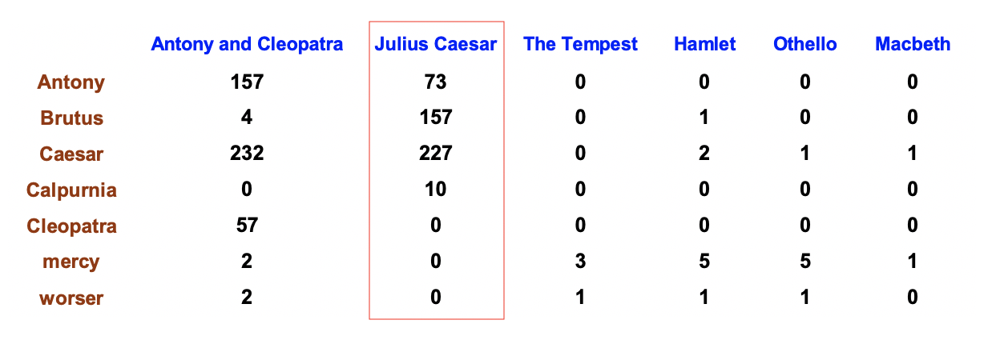
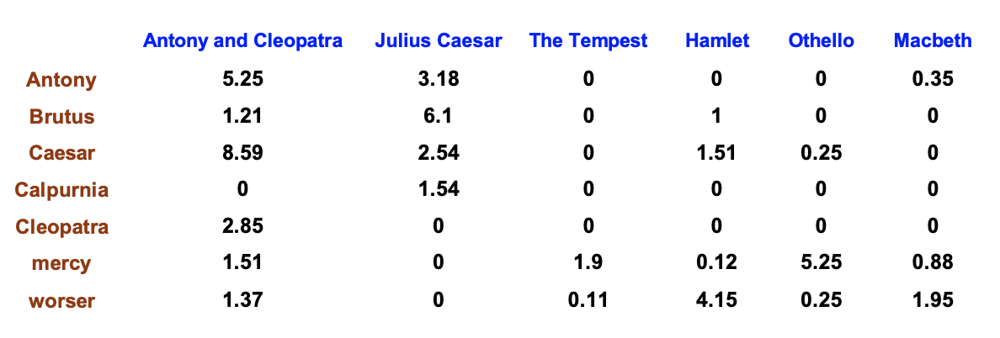

NLP and relevant research faces the Representation problem. Unlike the images, which are formalized into grid of integer pixels, languages are symbols, awaiting to be transformed/encoded into digits.
In a very preliminary stage, simply creating a map from each word to index is a good start, though we throw away many effective information during such representation. It feels like each word is totally independent, which is absolutely not what we want and going extremely overfitting.
One-hot vector representation
This is a bit improvement: we use multi-dimensional vector instead of scalar to represent every symbol.
Suppose there is a symbol set
Then let $w_i$ be denoted by an $n$-dim vector:
where $1$ only appear in the $i$-th dimension.
For such representation, for any $i$ and $j$.
Thus it is a non-biased representation.
In general, we call each dimension in such vector a feature, and a training/test sample may be represented as such a feature vector, by collecting all the symbols together.
So far we give an effective way, relative to the preliminary indexing approach, to encode the input text/sentence into a numerical vector with each binary dimension $\in \{0,1\}$.
Feature function
We may apply such strategy to the NLP tasks such as POS. Foe n-gram features, we can define the feature function in the following way:
A history for a $2$-order Markov model is a $4$-tuple, $
Generally speacking, we have some input domain $X$ and a finite label set $Y$, and the aim is to provide a conditional probability(score) $P(y|x)$ for $\forall x \in X,\forall y \in Y$.
A feature function is defined as $\phi_k: X\times Y \to \mathbb {0,1}$ (Descartes product -> binary/indicator functions),$k\in {1,2,\dots,m}$ and $m$ is the number of features. On top of that, we are able to define $m$ taggin “cases” and record them into a binary vector.
For example,
The weighted one-hot, TF-IDF
This serves as one-hot Representation enhancement: the binary form value is not enough and we resort to counting again.
TF
TF means the Term Frequency, the reason of mentioning “Term” is not to abuse the “word”, since our unit is not exactly always the word.
The different is that we now take the Frequency into account, since it does discriminate different samples. Consider the vector representation of a text set $T={t_i}$, we may count the frequency of each candidate term and construct vector for each text. Like this:

Vector representation for document definitely does NOT consider the ordering of words in a text. Thus, the following has the SAME vectors:
- Jerry met Aaron.
- Aaron met Jerry.
This is also called bag of words model for text representation.
The term frequency $tf_{t,d}$: of term $t$ in document $d$ is defined as the number of times that $t$ occurs in $d$.
The knowledge behind is that a document with $10$-occurences of the term $x$ is more relevant than that of $1$-occurence. But never be proportional!
The logarithmic frequency weight of term $t$ in $d$ is:
Score for a document-query part is defined as **sum over terms $t$ in both $q$ and $d$
(The score is $0$ if none of the query term is present in the document.)
DF
On the other hand, Document Frequency(DF) is introduced according to the following assumption:
Rare terms are more informative than frequent terms
After all, most frequent as step words are not informative. Thus, we would like to give high weight for rare terms. We can statistically collect those terms with very low frequency and believe that they assume the critical discriminative information among the documents. That is why we use DF to capture this.
IDF weight $idf_{t}$, is the inverse of document frequency $df_{t}$.
- $df_{t}$: the number of documents that contain $t$
- $df_{t}$ is an inverse measure of the informativeness of term $t$
- $df_{t}\leq N$
- $idf_{t} = lg (N/df_t)$, log is introduced to dampen the effect of IDF (flatten curve)
TF-IDF Weighting
The TF-IDF weight of a term is the product of both:
where the form is inner product as a matter of fact. The value of such weight will:
- increases with the number of occurrences within a document
- increases with the rarity of the term in the collection
Therefore, the final ranking of documents for a Query is :
By far, the one-hot representation has been through the Binary case, count case, to the weight case.

Reference: Tutorial materials of Zhao Hai(Shanghai Jiao Tong Univ.);